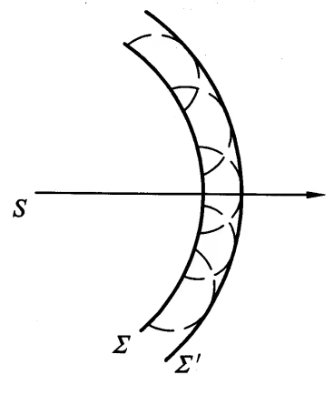
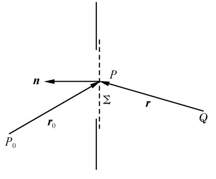
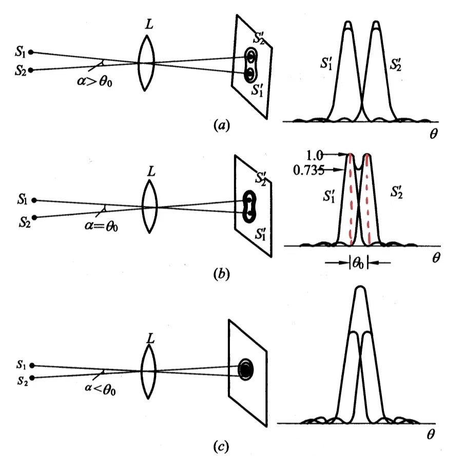

对于波源S，在某一时刻所产生波的波阵面为\(\Sigma\)，则\(\Sigma\)面上的每一点都可以看作是次波源，它们发出球面次波.
其后某一时刻的波阵面\(\Sigma'\)，即是该时刻这些球面次波的包迹面.

某一时刻\(t'\)的波阵面\(\Sigma'\)上每一点的光振动，应为任意\(t\lt t'\)时刻的波阵面\(\Sigma\)上各点发出的次波场叠加的结果.
真空或各向同性、均匀、透明、无源介质中自由传播的单色光波，空间Q点的惠更斯-菲涅尔原理的数学表达式为：
$$U(P) = C\iint_\Sigma U(P_0)K(\theta)\frac{e^{ikr}}{r}\mathrm{d}s$$衍射理论所要解决的问题是：光场中任一点\(P\)的复振幅能否用光场中其他各点的复振幅表示出来.
例如：由孔径平面场分布计算出孔径后任一点的复振幅.
显然，这是一个根据边界值求解波动方程的问题.
计算\(U(P)\)的主要数学工具为Green定理，它可作如下表述：
若\(U(P)\)与\(G(P)\)为空间位置坐标的任意两复函数，\(S\)为包围空间某体积\(V\)的封闭曲面.
若在\(S\)面上与\(S\)面内，\(U(P)\)与\(G(P)\)均单值连续，且具有单值连续的一阶与二阶偏导数，则有：
$$\iiint_V(G\nabla^2 U - U\nabla^2 G)\mathrm{d}V = \iint_S\left(U\frac{\partial G}{\partial n} - G\frac{\partial U}{\partial n}\right)\mathrm{d}S$$上式称为亥姆霍兹和基尔霍夫积分定理.
其意义在于衍射场中任意点\(P\)的复振幅分布\(U(P)\)可以用包围该点的任意封闭曲面\(S\)上各点扰动的边界值\(U\)与\(\frac{\partial U}{\partial n}\)计算得出.

上图表示位于\(P_0\)点的单色点光源照明平面屏幕的情况.
单色点光源照明下，平面孔径后方光场中任一点\(Q\)的复振幅为：
$$U(Q) = \frac{1}{i\lambda}\iint_\Sigma\frac{a_0e^{ik_0r_0}}{r_0}\left[\frac{\cos(\boldsymbol{n}, \boldsymbol{r}) - \cos(\boldsymbol{n}, \boldsymbol{r}_0)}{2}\right]\frac{e^{ikr}}{r}\mathrm{d}S$$上式称为基尔霍夫衍射公式.
孔径平面上的复振幅分布是球面波产生的，因此可用下式表示：
$$U_0(P) = \frac{a_0}{r_0}e^{ikr_0}$$可以看出，基尔霍夫衍射公式与惠更斯-菲涅尔原理是一致的，只是在波动理论的基础上，它进一步得出了常数\(c\)与倾斜因子\(K(\theta)\)的具体值：
$$c = \frac{1}{i\lambda}$$ $$K(\theta) = \frac{\cos(\boldsymbol{n}, \boldsymbol{r}) - \cos(\boldsymbol{n}, \boldsymbol{r}_0)}{2}$$在上基尔霍夫衍射公式中，令：
$$h(P, Q) = \frac{1}{i\lambda}\frac{e^{ikr}}{r}K(\theta)$$则：
$$U(Q) = \iint_\Sigma h(P, Q)U(P)\mathrm{d}S$$为了理解\(h(P, Q)\)的物理意义，可以设想\(\Sigma\)面上任一点\(P\)，其复振幅为\(U_0(P)\)，在\(P\)点处的小面元\(\mathrm{d}S\)对观察点\(Q\)的贡献为：
$$\mathrm{d}U(Q) = h(P, Q)U(P)\mathrm{d}S$$\(h(P,Q)\)表示在\(P\)点有一个单位脉冲（即\(U_0(P)\mathrm{d}S = 1\)时），在观察点\(Q\)造成的复振幅分布.
\(h(P,Q)\)称为脉冲响应或点扩散函数.
物理上，\(U_0(P)\mathrm{d}S\)通常并不等于1，让其为1是认为定义的.
菲涅尔-基尔霍夫衍射公式对于光源与观测点是对称的，即S电源在P点产生的效果，与在P点放置相同强度的点源时在S点处产生的效果相同.
所谓互补屏是这样的两个屏：其中一个屏的通光部分正好对应另一个屏的遮挡部分.
两个互补屏在衍射场中某点单独产生的光场复振幅之和等于无衍射屏、光波自由传播时在该点产生的光场复振幅.
$$\tilde{E}_0(P) = \tilde{E}_1(P) + \tilde{E}_2(P)$$离衍射孔不同距离处，衍射图样是不同的.
对于一个单色平面光波垂直照射圆孔\(\Sigma\)的情况：
1、在距离\(\Sigma\)很近的K1处观察透过的光，将看到边缘清晰的光斑，光斑的形状与大小和圆孔基本相同，可以看作是圆孔的投影，此时光的传播可以大致视为直线传播.
2、在稍远距离K2上观察时，将看到一个边缘模糊的稍大光斑，光斑内有一圈圈的亮暗环，此时不能将其视为圆孔的投影.
3、距离从K2增加到K3时，光斑范围不断扩大，但光斑中圆环数逐渐减少，且环纹中心表现出从亮到暗，又从暗到亮的变化.
4、当观察平面位于距离很远的K4位置时，将看到一个较大的中间亮、边缘暗，且在边缘外有较弱的亮、暗圆环的光斑。此后，观察距离再增大，只是光斑扩大，但光斑形状不变
近似方法1将衍射区划分为：
观察屏必须放置在远离衍射屏的地方.
光学仪器的光曈通常都是圆形的，因此讨论圆孔衍射现象对于光学仪器的应有，具有重要的实际意义.
分析在极坐标下分析夫琅禾费圆孔衍射.
设圆孔半径为\(a\)，圆孔中心\(O_1\)位于光轴上.
则圆孔上任意一点\(Q\)的位置坐标\((\rho_1,\phi_1)\)与相应的直角坐标\((x_1,y_1)\)的关系为：
$$x_1 = \rho_1\cos\phi_1$$ $$y_1 = \rho_1\sin+\phi_1$$圆孔夫琅禾费衍射的中心亮斑.
艾里斑集中了入射在圆孔上能量的83.78%.
半径艾里斑的半径\(\rho_0\)由第一光强极小值处的\(\Phi\)值决定：
$$\Phi_{10} = \frac{ka\rho_0}{f} = 1.22\pi$$ $$\therefore \rho_0 = 0.61f\frac{\lambda}{a}$$ 角半径 $$\theta_0 = \frac{\rho_0}{f} = 0.61\frac{\lambda}{a}$$ 面积圆孔面积越小，艾里斑面积越大，衍射现象越明显.
能够分辨开两个靠近的点物或物体细节的能力.
将一个点物衍射图样的中央极大位置，与另一个点物衍射图样的第一个极小位置恰好重合的状态，作为光学成像系统的分辨极限.
认为此时光学系统恰好能分辨开这两个点物.

设有\(S_1\)和\(S_2\)两个非相干点光源，间距为\(\epsilon\)，它们到直径为\(D\)的圆孔距离为\(R\)，则\(S_1, S_2\)对圆孔的张角\(\alpha\)为：
$$\alpha = \frac{\epsilon}{R}$$由于圆孔的衍射效应，\(S_1,S_2\)将分别在观察屏上形成各自的衍射图样，设其艾里斑关于圆孔张角为\(\theta_0\)，则：
$$\theta_0 = 1.22\frac{\lambda}{D}$$